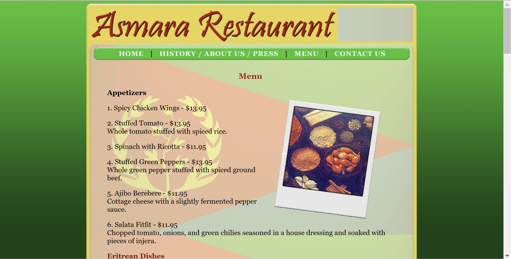
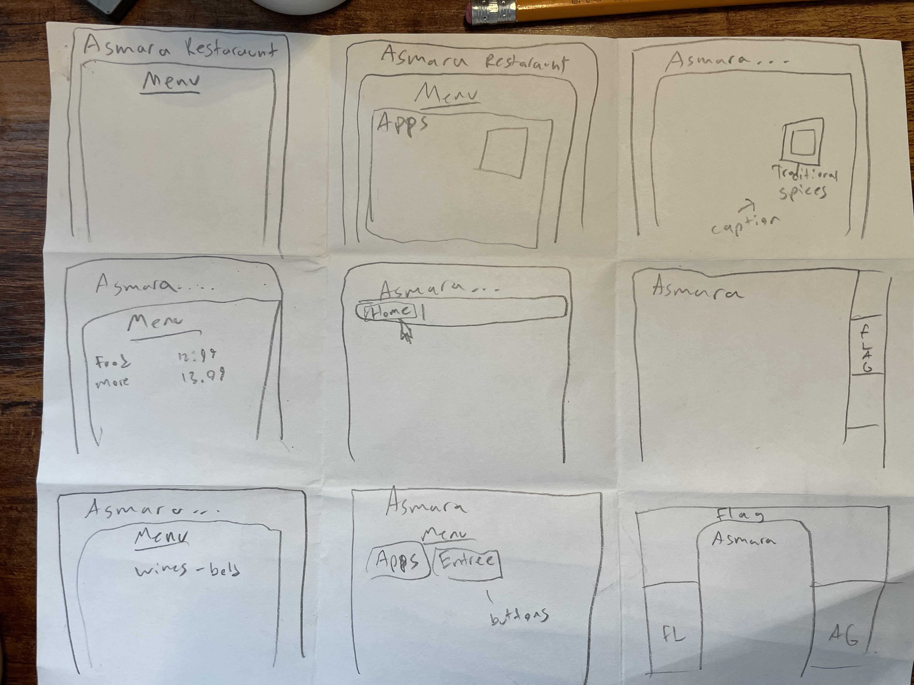
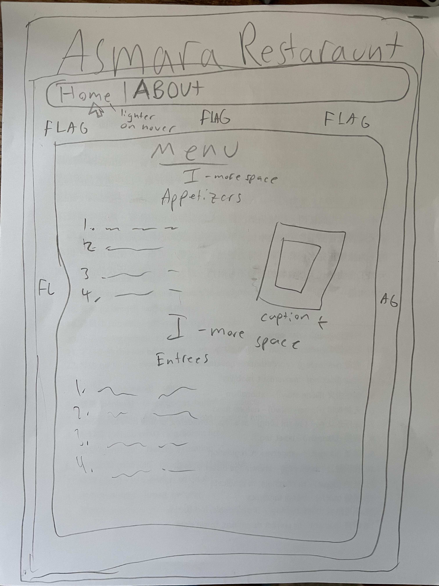
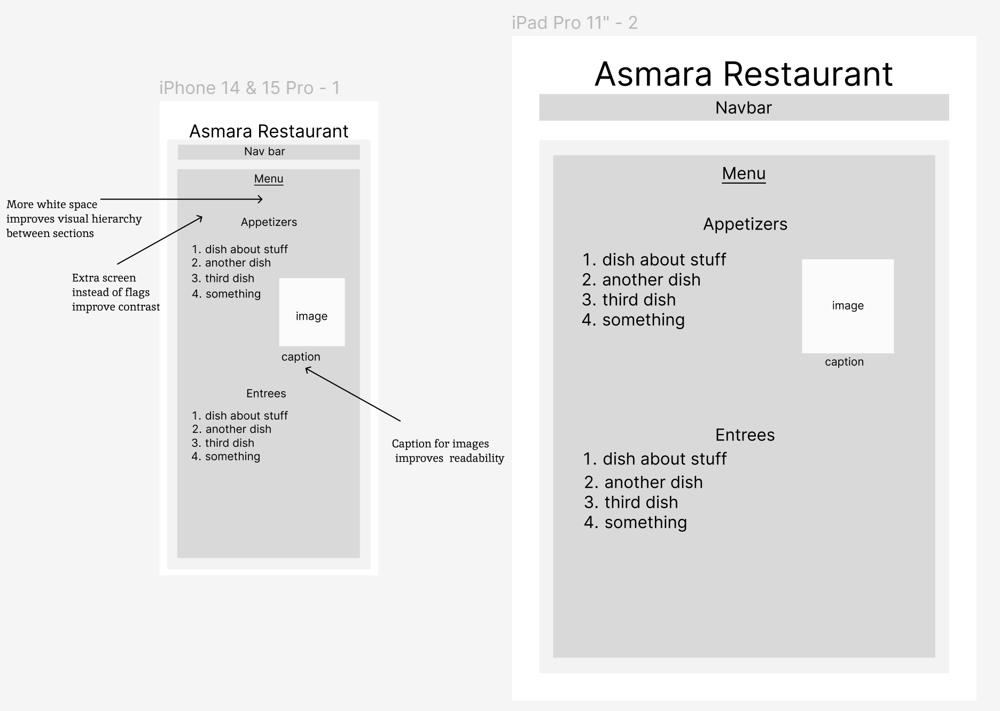
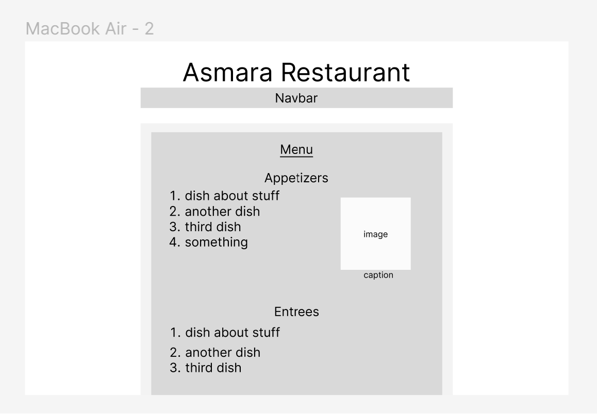
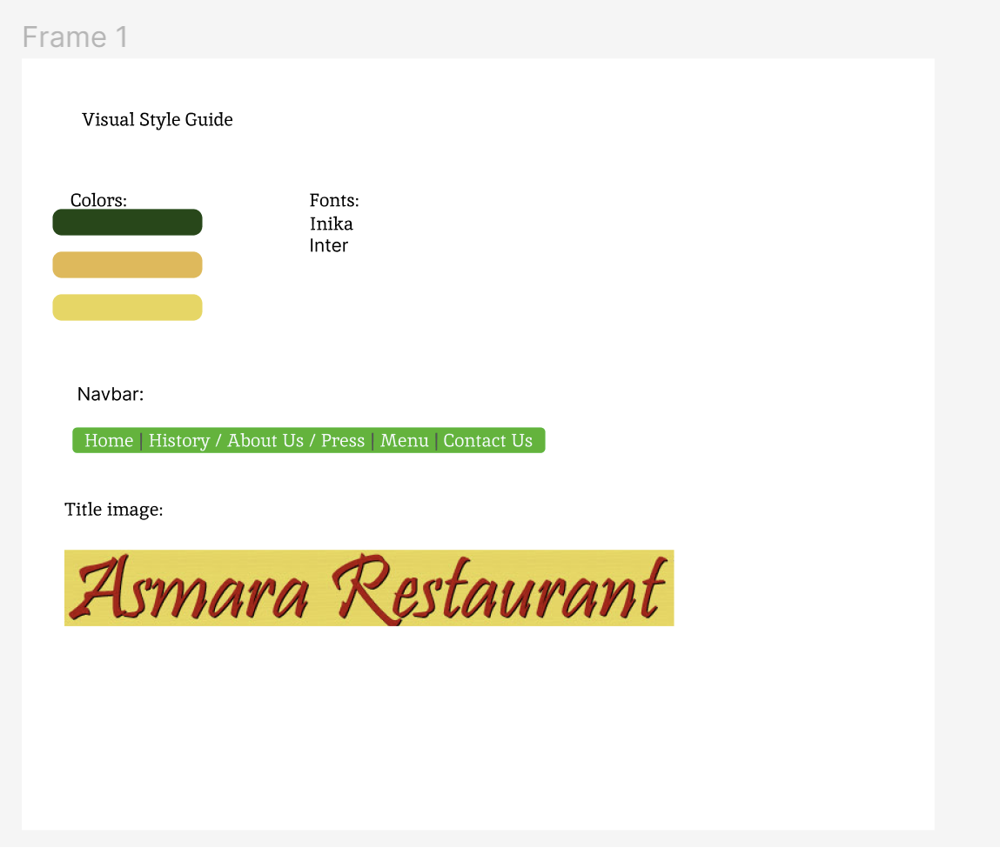
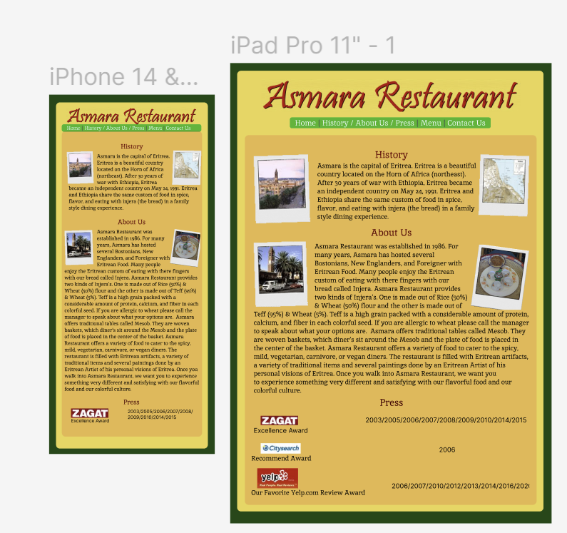
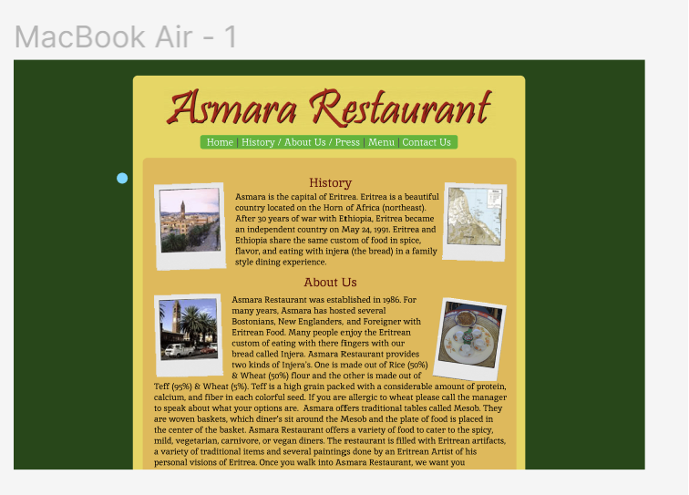

Responsive Redesign Project

Asmara Restaurant Link
I chose this website because it looked outdated to me upon first glance, and upon second glance seemed to have some problems with responsiveness and readability.
Usability:
- Poor contrast makes it difficult to read text
- Learnability, memorability, and efficiency is good with the navigation and organization of the site, with well sectioned pages. Buttons could have better hover qualities.
- Visual hierarchy could use some work, with sections of text feeled smushed together
Accessibility:
There were a few problems with this site, namely low contrast on the text due to the choice in background. Also there was no language attribute and no alt tags for images. I agree with the webaim errors, it was very hard to read the text.
9 Sketches:

Final Sketch:

Lofi Wireframes:


Style Guide:

Hifi Wireframes:


Final Website:
Redesigned Website Link